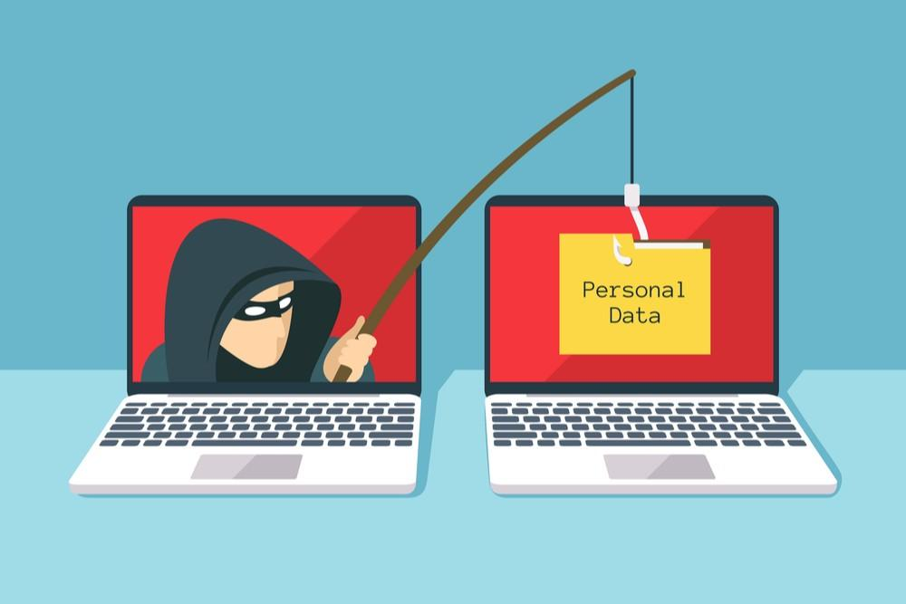

The increasing significance placed on information necessitates greater means of protecting it.
Advances in technology have allowed for the uniqueness of one’s body to be used as a means of identification.
|
Biometrics as Identification Data safety and security are becoming increasingly important as more of our personal information is converted into electronic data. This makes Canadians, like other global citizens exposed to digital identity theft, in addition to conventional theft. Identity theft is a serious problem. It is an illegal act of obtaining another person’s information, usually to commit illegal acts in their name. In this day and age, most services have moved to an online format, which has made people more vulnerable to identity thieves who can create a new “you” and apply for credit cards, bank accounts, shop online, and engage in other online activities. To increase efficiency, the human element is being removed to make way for technology. Most of what we do in our daily lives are accomplished through the Internet. This increase in digital access needs increased security. Users (email, online banking, online shopping) are required to use unique identification such as usernames and passwords.  Unfortunately, people find themselves having too many passwords which makes it hard for them to remember. Users therefore tend to use the same username and password over and over again. This situation creates a lower level of security should the password be stolen or cracked. Canada began to use a method of identification and access to information by using a unique blueprint of the human body to create novel identification for each user. Fingerprint scanners, iris pattern recognition, facial recognition, deoxyribonucleic acid (DNA), and blood samples are all examples of how biometrics can be used for identification and security purposes. Because of technology, physical characteristics are converted into electronic data and are now being used to identify a person to access information or services. Protecting personal information and proving a person’s identity benefits from biometric technology. This radical change to information access and protection increases efficiency, as it has evolved with technology. |
|
The Smart Wallet: The Wave of the Future? The smart phone technology we have today is a far cry from the telephone invented by Alexander Graham Bell in 1876. The capabilities of today’s smartphones have grown leaps and bounds.
Your smartphones can now act as your wallet too. That is, you can download a mobile app of your choice, then load your debit or credit cards so you can just swipe or tap your smartphone whenever you make purchases. This technology is known as Near-Field Communication (NFC) and it comes in the form of a chip that is part of the new wave of smartphones. An added security feature is the use of a PIN code to authorize the NFC. They had to write a letter using a pen and paper, put it in an envelope, put a stamp, and send it through the post office. A local destination would take a few days for it to arrive but anything further would take much more than that. Today, you could type anything from your thoughts, type it into a computer keyboard or on a smartphone keypad and the message will arrive at your receiver within seconds, wherever in the world. The Role of Social Media in Communication
This change in communication began with email and has since evolved to include social media. There are lots of social media platforms today which have changed the face of communication. The most widely used ones are Facebook, YouTube, WhatsApp, Messenger, WeChat, Instagram, QQ, Tumblr, Qzone, Tik Tok, Twitter, Reddit, LinkedIn, Viber, Snapchat, Pinterest, among many others. |
Let’s take what Facebook can give its user.
|
The Transmission of Social Norms The advent of social media has provided opportunities for people to communicate and exchange ideas, create friendships, and network across the world.
French sociologist Émile Durkheim believed that the increased transmission of social norms has the ability to increase social cohesion, thereby reducing anomie. The virtual communities created by social networking have provided a stage for socialization and have reinforced social norms and values on a different level. There are Internet sites which allow the user to assume a new identity in the form of an avatar. An avatar is a visual representation of an online user’s alter ego. A user through an avatar can look and act anyway the user wants and be able to do things the user could not do in the real world, as far as the imagination can reach.
This begs the question: if everything is happening in the virtual world, then what happens in real life? Think of Canadian teenagers spending considerable time in the virtual world. Do you think this will have an impact on their social skills when interacting face-to-face in the real world?
As established in our previous classes, behaviour is learned through interaction and watching cues from the other person.
In the virtual world, people lose the benefit of behavioral cues to help them understand how the recipient thinks and feels about the interaction. This is where emoticons (emotional icons that are meant to show an emotion or sentiment) and abbreviated language (e.g., LOL, BRB) come into play.
They intend to show the tone of the person communicating through the information highway. |